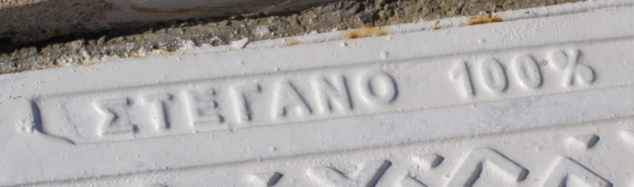

This Matlab toolbox implements near-optimum perfect steganography of finite memoryless sources, as described in detail in [1]. Preliminary parts of this work, which is joint research with my former PhD student David Haughton, were published in conference papers [2] and [3]. This research was funded by Science Foundation Ireland under grant 09/RFP/CMS2212.
The Greek name of the toolbox means "100% watertight", and it is meant to be pronounced Stegano100 in English (the actual Greek pronunciation would be something like /stegano' ekato' tis ekato'/). The name was inspired by the inscription in a manhole that illustrates this page (sometimes it pays to look down). Despite its name, the plumbing in Στεγανό 100% is somewhat leaky, because it uses digital images in the spatial domain as hosts (which are not memoryless). However the toolbox is offered as a proof of concept, meant to spur further research. In any case, the algorithms in the toolbox can be used as-is to outperform any first-order steganographic approach, such as model-based steganography [6] and all steganographic variations of LSB embedding (such as ±1 steganography, aka LSB matching [7]), as discussed in detail in [1].
You can download Στεγανό 100% here: stegano100.tar.gz. The README file should be enough to get you going.
Note: if you have landed on this webpage because you are interested in ranking and unranking permutations of multisets, then you are also in the right place because this problem is efficiently solved within the toolbox (which relies on arithmetic coding to implement Slepian's Variant I permutation coding).
I cannot help but take this occasion to say a few words about
the terminology commonly used in steganography. New fields are
inevitably hesitant about nomenclature. This is the reason why,
back in 1996 at the First International Workshop in
Information Hiding [4], several words were
coined in order to describe novel information hiding concepts.
And thus, a number of terms with the inglorious prefix "stego"
attached to them were born, like "stegokey" and
"stegosystem".
The field of cryptography surely was the inspiration behind these neologisms. The word "cryptography" is based on the Ancient Greek κρυπτός /kryptos'/ (hidden, concealed), and from the "crypto" prefix we have "cryptokey" and "cryptosystem". Since the word "steganography" is based on the Greek στεγανός /steganos'/ (watertight, hermetic), clearly the right prefix should have been "stegano", and not "stego". Thus from "steganography" (which we could also call watertight watermarking, just as an etymological pun...) we should have arrived at "steganokey" and "steganosystem".
Why was then "stego" chosen, rather than "stegano"? Well, "stego" is 28% shorter than "stegano". But shorthand belongs in stenography, not in steganography! (in spite of the duality between compression and steganography, see [1]). Also, there are two syllables in "stego", like in "crypto": rhyme, but no reason. If you really want my opinion, it was all Jurassic Park's fault. Dinomania was all the rage in the mid-1990s, and so I am very inclined to think that the prefix "stego" was coined under the influence (so to speak) of the familiar stegosaurus. The stegosaurus name was definitely in the air around that time, even though this creature did not feature in Jurassic Park until its first sequel, one year after [4].
Unfortunately "stego" in stegosaurus does not come from the adjective στεγανός, but from the Ancient Greek noun στέγος /ste'gos/ (roof, cover, cf. modern Greek στέγη=roof). The name is due to the resemblance of the plates along the stegosaurus spine with roof tiles. Still, one could argue that the prefix "stego" used in information hiding is derived from στέγω /ste'go/ (ancient Greek for "I cover, I keep water out"), but this verbal form does not work as an adjective... This wrong use is to some extent perpetuated by calling "cover" a signal used to hide information. Whatever its origin, the prefix "stego" agreed upon in 1996 [4] is nothing short of a betrayal of the historical term steganographia [5] (which has a pedigree of more than five centuries).
I suppose that at this stage there is little room for changing
the status quo, but Trithemius must be turning
in his grave (he does look a bit cranky,
doesn't he?). Ah well, not the first linguistic issue to come
up in the information hiding community!
The cheesy use of
"valumetric" (valumetric attack, valumetric
distortion) also speaks volumes.
Good luck steganoanalyzing Στεγανό 100%!
Félix Balado
[1] F. Balado and D. Haughton, "Asymptotically optimum perfect universal steganography of finite memoryless sources", IEEE Transactions on Information Theory, 64 (2):1199-1216, February 2018 [arXiv:1410.2659]
[2] F. Balado and Haughton, "Optimum perfect steganography of memoryless sources as a rate-distortion problem", IEEE International Workshop on Information Forensics and Security (WIFS) Guangzhou, China, November 2013 [full text]
[3] F. Balado and D. Haughton, "Permutation codes and steganography", 38th IEEE International Conference on Acoustics, Speech and Signal Processing (ICASSP) Vancouver, Canada, May 2013 [full text]
[5] J. Trithemius, "Steganographia", c. 1499